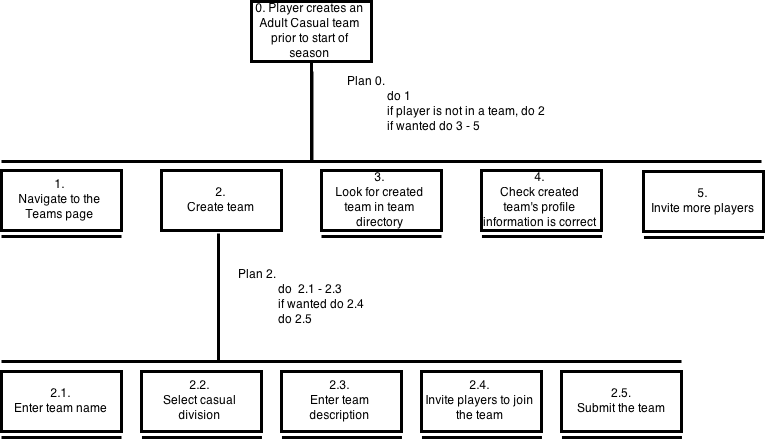
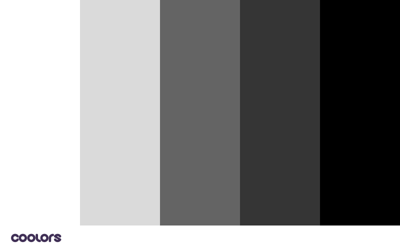

Design Documentation
a. HTA

Footnotes: Click on ‘Teams” in the menu, or “Register a team” in the banner to go to the Teams page. Click “Create a Team” button.
Type anything into the team name and description (the “correct” info has been hardcoded in, so it doesn’t matter what is typed in).
Invite players by clicking on the names the leftside box, and invited players will show up in the rightside box.
Use dropdown to filter divisions, or searchbar to search for a team name/description.
b. Colour Scheme

Colour scheme is monochrome. This is chosen so that the website colours will never clash with the content colours, whatever the content will be. A monochromatic colour scheme also caters to those with colour blindness. A light grey (#dadada) is often used instead of plain white as background for potentially big chunks of text so that the design is softer and less straining to the eye, while dark grays (#646464 and #8a877e) are used as background of buttons and smaller amount of text so that the button text can be light (#dadada) and stand out.
c. Backgrounds, Lines, Borders, etc.
Changing Quidditch images are used as page background to add interest. Other components (menu, team directory) are laid on top with translucent background so that the text in those components becomes easily readable while the background images remain visible to maintain interest to the design. Various subtle textures conforming with the colour scheme are used as background (the three divs and the bottom page background in homepage). Elements are grouped together using negative space, alignment, and section backgrounds. Rounded corners are used on team tiles to give a card-like feel, indicating that they are more than simply images.
d. Fonts
For the main body font, Helvetica Neue is the first choice, followed by Helvetica, Arial (extremely similar to Helvetica, and widely available), and finally as a last resort, any sans serif font. Helvetica is chosen as it is a neutral font and can fit into any situation, and sans serifs are proven to be easier to read on screens. The logo font is Endor, which fits with the fantasy/Harry Potter theme.
e. Assumptions and Limitations + Appreciation Tips
Assumptions:
- It is assumed that the computer used has Helvetica Neue font installed, and it is assumed that the screen resolution is 1920x1080. Testing was done using Chrome's Developer Tools and device emulation to set the resolution to 1920x1080.
- It is assumed that the player is called Zoe and has already logged in.
- It is also assumed that the player wants to create an adult casual team called "Porkchops" with a team description of "Team porkchop is the best team in the Quidditch casual division. Join us to win all the time!".
- It is assumed that the player registers for a team very early before the Sorting Week starts, so there are a relatively few number of teams created. The player browses the team directory and cannot find an adult casual team, so she creates a team herself.
- It is assumed that the player has entered a date of birth, and that the site has calculated the age of the player to determine that the player is an adult - and therefore only asks if she wants to play in the casual, serious, or legends level.
- It is assumed that the players that are invited do not accept the invitation to join the team immediately.
Limitations:
- The About, Schedule, Leaderboard, Help, and Player Profile pages have not been implemented as they are mostly irrelevant to the task, and as there is a time constraint.
- Though there is an upload avatar function in the Create Team popup, an avatar cannot be uploaded because it is a front-end prototype. However if it were not, then the avatar image would be updated after the user selects an image file. Note that the upload function restricts the type of file that can be uploaded to images.
- Homepage content has been kept minimal due to time constraint. But the three columns give an indication of how more content can be added.
How to Appreciate the Design More:
- The main page background changes once the slider underneath the three divs gets to the right side of the page.
- The menu has a black-to-transparent gradient background which makes sure the text is always readable no matter the image underneath.
- When scrolled down, the menu's background colour changes to slightly translucent solid gray, so that any element that goes underneath the menu doesn't make the menu text any less readable. The background changes back after scrolling back up.
- All buttons and menu items have transition effects which increases visibility of system status.
- The current page (in Teams) is in bold - also visibility of system status.
- When a popup opens, if you click ouside of the popup (in the darkened area), the popup is closed ==> Fitt's Law!
- The Team Division Filter and the search bar actually work!
f. Resources
Code Used/Consulted
- jQuery (https://jquery.com/)
- Html5doctor.com Reset Stylesheet v1.6.1 (http://html5doctor.com/html-5-reset-stylesheet/)
- Vegas Slideshow (http://vegas.jaysalvat.com/)
- Search Bar (http://jsfiddle.net/gAAth/12/)
- jQuery Multiselect (http://loudev.com/)
Image Credits
Backgrounds:
- bg1: http://vignette2.wikia.nocookie.net/dumbledoresarmyroleplay/images/b/b4/New-Half-Blood-Prince-stills-Quidditch-pitch-harry-potter.jpg/revision/latest?cb=20121021205846
- bg2: http://www.blastr.com/sites/blastr/files/Quidditch.jpg
- bg3: http://www.aceshowbiz.com/images/still/harry_potter_hbp155.jpg
- darkTex and lightTex: subtlepatterns.com
Placeholder Images:
- noavi: http://www.openrice.com/images/v4/previewImg/NoAvatar_member.png
- panel1: http://images-cdn.moviepilot.com/image/upload/c_fill,h_281,w_500/t_mp_quality/ron-weasley-quidditch-harry-potter-6938908-500-281-how-ron-weasley-developed-my-taste-in-people-jpeg-198204.jpg
- panel2: http://www.empireonline.com/images/features/photo/harry-potter-half-blood-prince/11.jpg
- panel3: http://images6.fanpop.com/image/photos/34100000/Chamber-of-Secrets-harry-potter-the-boy-who-lived-and-much-more-34134880-432-288.jpg
- panel4: http://img1.wikia.nocookie.net/__cb20140630074827/harrypotter/pl/images/9/92/Harry_Potter_(pierwszy_mecz)_2.png
- panel5: http://www.farfarawaysite.com/section/potter/gallery2/hires/26.jpg
- panel6: https://uconntact.uconn.edu/images/W460xL600/0/noshadow/Event/512c4af71d944065897ecb7694065f2f.jpg
- panel7: http://radiomacondo.fm/wp-content/uploads/2014/03/quidditch-buscador.jpg
- panel8: http://cdn3.teen.com/wp-content/gallery/hogwarts-fashion-well-miss-most/hp6d-05547.jpg
Functional image:
- search: http://www.clker.com/cliparts/w/r/Q/0/x/D/search-icon-light-grey-hi.png
Usability Check
The user was asked to search for an existing adult casual team, and if it doesn't exist, create a team herself. After creating the team, the user was asked to check the profile of the team she just created and invite three more players. The user was also asked to search for a team called "National Anthem" and find its team description.
The user was able to complete all of the tasks smoothly and successfully, however she did suggest that a cross be added on the top right corner of popups for closing the popups, as clicking outside the popup area to close the popups may not be apparent to users who are less tech-savy. She also suggested making the text size bigger, however as the test was done on a smaller, lower-resolution screen than the actual 1920x1080 resolution screen, this change was not implemented.